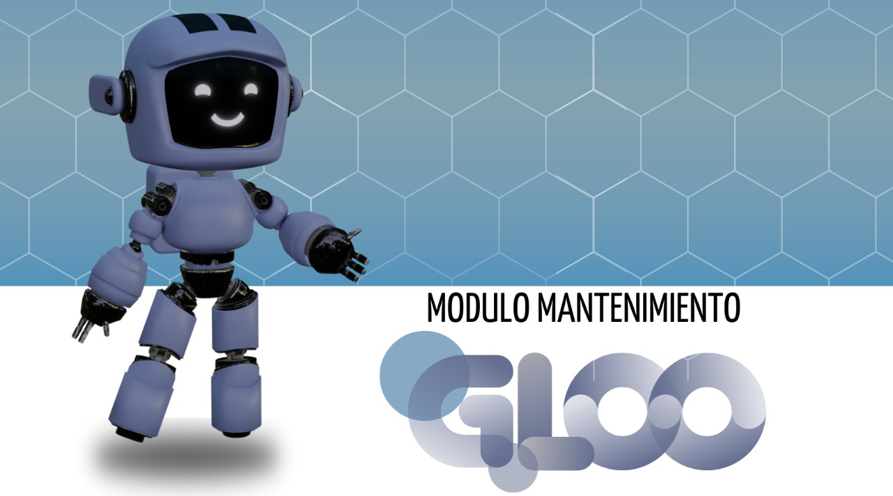

 Si tienes alguna duda dirigete al chatbot, presiona el botón
"Hablar con Gloo"
Si tienes alguna duda dirigete al chatbot, presiona el botón
"Hablar con Gloo"
😀
Si tienes alguna duda dirigete al chatbot, presiona el botón
"Hablar con Gloo"
LIMPIEZA Y DESINFECCIÓN DE CILINDROS DE OXÍGENO MEDICINAL.
SOLUCIÓN A FALLAS CILINDRO DE OXÍGENO
TIPS DE LIMPIEZA Y DESINFECCIÓN PARA TU CONCENTRADOR DE OXÍGENO MEDICINAL.
PROTOCOLO DE LIMPIEZA Y DESINFECCION CONCENTRADORES DE OXIGENO
DISPOSITIVO BIOMÉDICO
APRENDAMOS SOBRE TECNOVIGILANCIA
MECANISMOS DE REPORTES TECNOVIGILANCIA